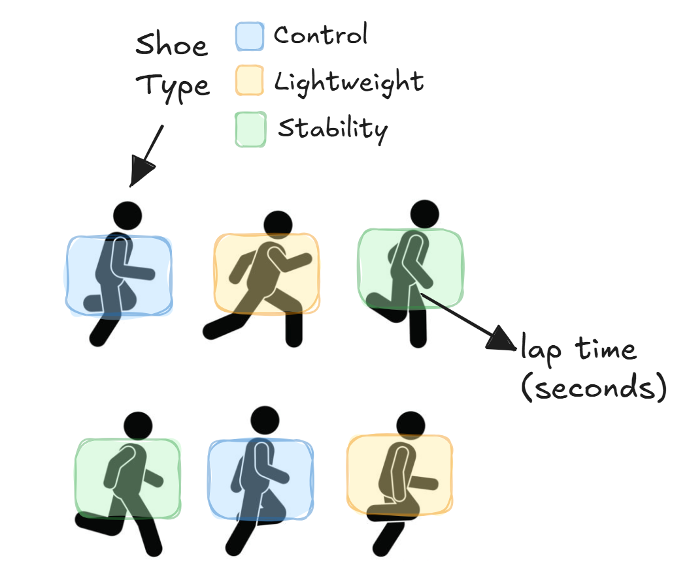
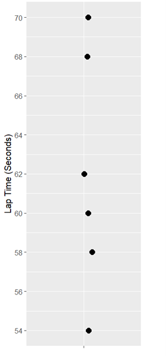
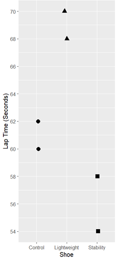
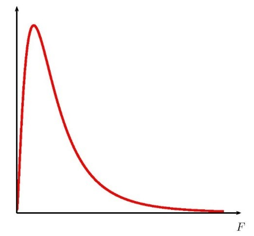

Module 2: Completely Randomized Designs
Analyzing a CRD (ANOVA)
From Design to Analysis
In a CRD, we assume:
- The systematic source of variation comes from the treatments
- All other variation is experimental error
Big idea: Does accounting for treatment reduce unexplained variability by more than we would expect by chance?
Example 2.1: Running Shoes
Response: Lap time (seconds)
Treatment structure:
- One-way
- Factor: Shoe type
- 3 Levels: control, lightweight, and stability
- t = 3
Experimental structure:
- CRD
- Experimental Unit: Individual (r = 2)
- Measurement Unit: Individual (N = 6)
Goal: Determine whether shoe type affects mean lap time.
Example 2.1: Running Shoes (Blueprint)
Notation - \(y_{ij}\)
Note
Suppose that \(y_{ij}\) represents the response value for the \(j^{th}\) observation taken under the \(i^{th}\) treatment. In general, we have \(t\) treatments and \(r\) observations under the \(i^{th}\) treatment (number of replications).
- \(\bar y_{\cdot\cdot}\) – overall mean
- \(\bar y_{i\cdot}\) – treatment mean
Example 2.1: Running Shoes 02-shoes.csv
Suppose the experiment was carried out, and the following lap times were recorded:
| Runner | Shoe | Lap Time (seconds) |
|---|---|---|
| 4 | Control | 60 |
| 6 | Control | 62 |
| 1 | Lightweight | 68 |
| 5 | Lightweight | 70 |
| 2 | Stability | 58 |
| 3 | Stability | 54 |
Example 2.1: Running Shoes
Suppose shoe has no effect
- All runners share the same mean lap time
- Differences are due to random variation
If we ignore shoe type, our best guess for any runner is the overall average lap time
\[\bar y_{\cdot\cdot} =\]
Error = observed - overall mean

Total Sum of Squares
Total variability measures how far observations are from the overall mean.
\[SST = \sum_{i=1}^t\sum_{j=1}^r(y_{ij}-\bar y_{\cdot\cdot})^2 = \]
\[(-2)^2+(0)^2+(6)^2+(8)^2+(-4)^2+(-8)^2=\]
Example 2.1: Running Shoes
Now suppose shoe does matter. If shoe has an effect:
- Runners wearing the same shoe should have similar lap times
- Different shoes may have different mean lap times
Best guess for a runner is the mean lap time for their shoe - \(\bar y_{i\cdot}\)
Error = observed - treatment mean

Sum of Squares Error (SSE)
This remaining variability is:
- Variation within shoe types
- Experimental error
\[SSE = \sum_{i=1}^t\sum_{j=1}^r(y_{ij}-\bar y_{i\cdot})^2 =\]
\[(-1)^2+(1)^2+(-1)^2+(1)^2(2)^2+(-2)^2=\]
Sum of Square Treatment (SSTrt or SSG)
What did we gain? By considering shoe total variability is reduced and the reduction is attributed to treatment.
\[SSTrt = SST - SSE = \]
Is this reduction in error big enough to claim shoe has an effect on lap time?
\[SSTrt = \sum_{i=1}^t\sum_{j=1}^r(\bar y_{i\cdot}-\bar y_{\cdot\cdot})^2=\] \[2(61-62)^2+2(69-62)^2+2(56-62)^2 =\]
Analysis of Variance (ANOVA)
Note that \(SST = SSTrt + SSE\). Thus, we have partitioned the total sums of squares into two parts:
- SSTrt: The variation between factor level means (betweeen treatments)
- SSE: The variation due to experimental error (within treatments)
ANOVA Table
| Source | df | SS | MS | F |
|---|---|---|---|---|
| Treatments | t − 1 | SSTrt | MSTrt = SSTrt/(t−1) | MSTrt/MSE |
| Error | N − t | SSE | MSE = SSE/(N−t) | |
| Total | N − 1 | SST |
- Large F: treatment explains substantial variability
- F ≈ 1: treatment explains little beyond noise
Example 1.1: Running Shoes
| Source | df | SS | MS | F |
|---|---|---|---|---|
| Treatments | 172 | 172 / 2 = 86 | 86 / 4 = 21.5 | |
| Error | 12 | 12 / 3 = 4 | ||
| Total | 184 |
Skeleton ANOVA (use context!)
| SV | df |
|---|---|
| \(\phantom{\text{Treatments}}\) | \(\phantom{N-t\;\;\;\;}\) |
What ANOVA Answers:
Do any treatment means differ?
\[H_0: \mu_{Control}=\mu_{Lightweight}=\mu_{Stability}\]
\[H_A: \text{At least one } \mu_i \text{ differs}\]
F-distribution (assuming the null is true)
- Large \(F\) is evidence to reject \(H_0\)
- Under \(H_0\): \(F \sim F_{(t-1,\;N-t)}\)

Analyzing a One-way ANOVA in R
Analyzing a One-way ANOVA in JMP
Analyze > Fit Model > assign variables(Y = Lap Time, Add = Shoe) > Emphasis “Effect Leverage” > Run

Example 2.1: Running Shoes (Conclusion)
At an \(\alpha = 0.05\), we have evidence to conclude there is an effect of shoe type on lap time (seconds) for all runners similar to those in our study (F = 21.5; df = 2,3; p = 0.017).
Alternative conclusion: At an \(\alpha = 0.05\), we have evidence to conclude the mean lap time (seconds) differs for at least one shoe type for all runners similar to those in our study (F = 21.5; df = 2,3; p = 0.017).